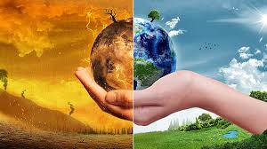

¿ESTAMOS A TIEMPO DE DETENERLO? Si no nos ocupamos del problema pronto, el Calentamiento Global podría transformar el planeta haciendo que sus patrones climáticos resulten cada vez más erráticos e impredecibles. Las consecuencias directas de tales cambios son la extinción de algunas especies, el aumento del nivel del mar, las sequías prolongadas que pueden hacerse crónicas hasta la desertificación o la falta de agua potable para gran parte de los habitantes del planeta, entre muchas otras. Desde la revolución industrial de los siglos XVIII y XIX, cuando se quemó carbón por primera vez para hacer funcionar máquinas de vapor a gran escala, los seres humanos han estado utilizando la energía en cantidades cada vez mayores. Los motores de los vehículos que se inventaron a mitad del siglo XIX, funcionan combinando la gasolina con el oxígeno del aire para generar calor mediante una reacción química llamada combustión. Como un subproducto de la combustión se libera dióxido de carbono (el mismo gas de nuestros cuerpos exhalan).De manera similar, las plantas de energía utilizan la combustión para producir electricidad quemando combustibles como el carbón, el gas y el petróleo, por lo que también emiten dióxido de carbono. La mayor parte de la energía que utilizan las personas proviene del uso de los llamados combustibles fósiles. El dióxido de carbono se desplaza hacia la atmósfera y hace que la capa de gases de efecto invernadero de la Tierra se engrose. Como resultado una parte más importante del calor del Sol queda atrapado dentro de la atmósfera y el planeta se calienta.
COMUNIDAD CIENTÍFICA
| COMUNIDAD CIENTÍFICA | |||||||
|---|---|---|---|---|---|---|---|
| POLÍTICAS | CONTROVERSIAS | ||||||
Las políticas sobre el calentamiento global son complejas debido a numerosos factores que surgen de la interdependencia de la economía mundial, de los fuertes intereses detrás de las causas del calentamiento global, y otros factores. Esto hace que el calentamiento global sea un desafío medioambiental con varios aspectos no tradicionales. La mayoría de los países son miembros de la Convención Marco de las Naciones Unidas sobre el Cambio Climático (CMNUCC).313 El objetivo último de la Convención es prevenir una interferencia humana peligrosa en el sistema climático |
A partir de la década de 1990, en los Estados Unidos, think tanks conservadores se movilizaron para objetar la legitimidad del calentamiento global como un problema social. Estos cuestionaron la evidencia científica, sostuvieron que el calentamiento global será benéfico y afirmaron que las soluciones propuestas harían más daño que bien. con respecto a la naturaleza, las causas y consecuencias del calentamiento global antropogénico. Las cuestiones en disputa incluyen las causas del incremento de la media global de la temperatura aérea, especialmente desde mediados del siglo XX, si esta tendencia de calentamiento no tiene precedentes o está dentro de las variaciones climáticas normales, si la humanidad ha contribuido significativamente a ella y si el aumento es total o parcialmente un artefacto de mediciones pobres |
||||||
|
|||||||